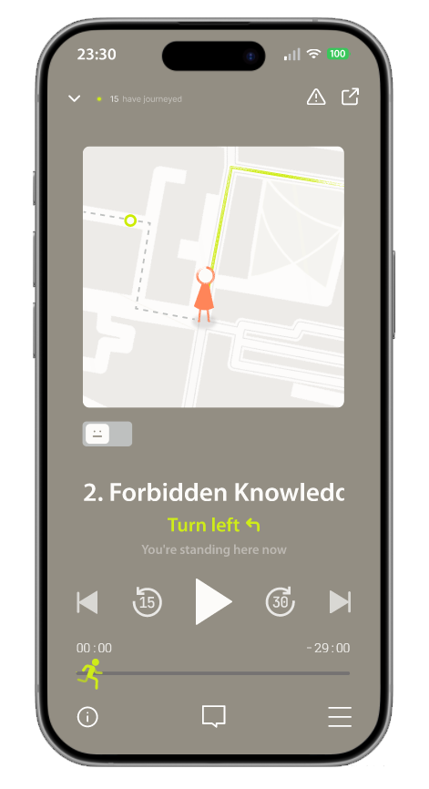
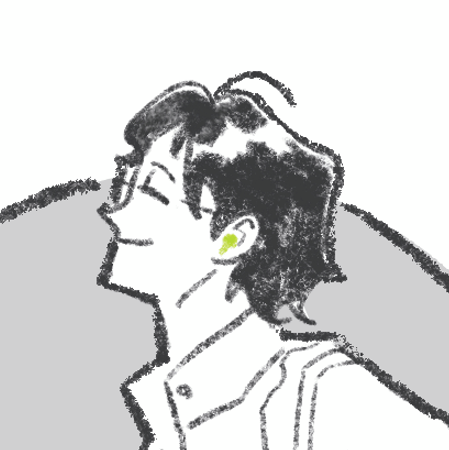
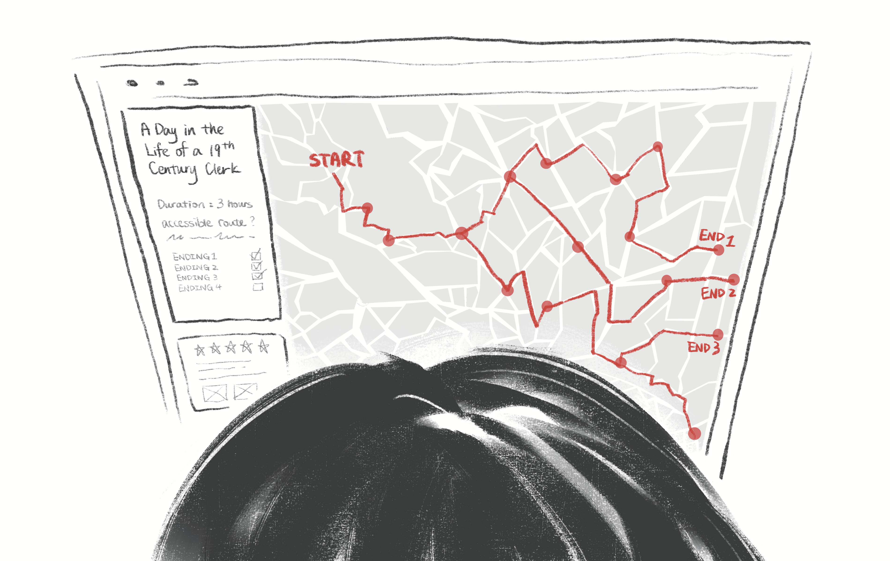
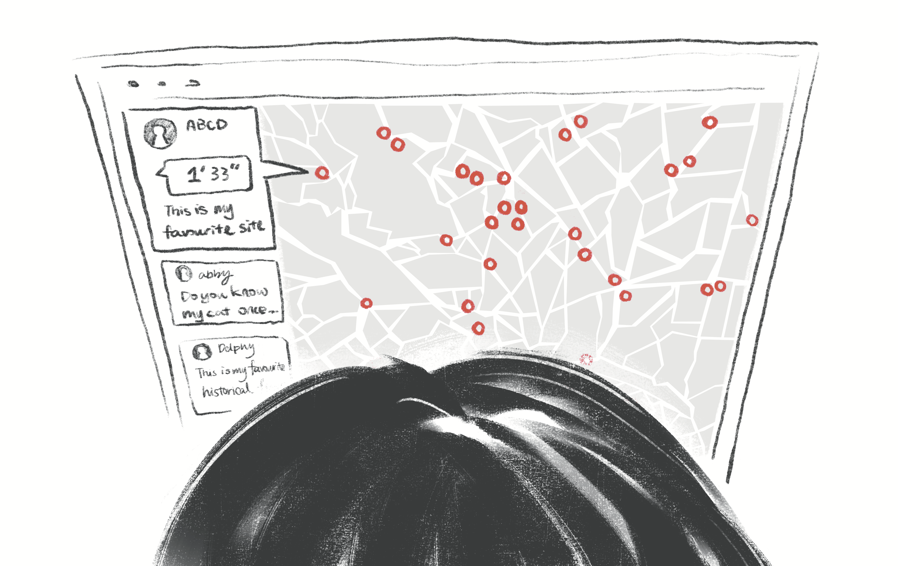
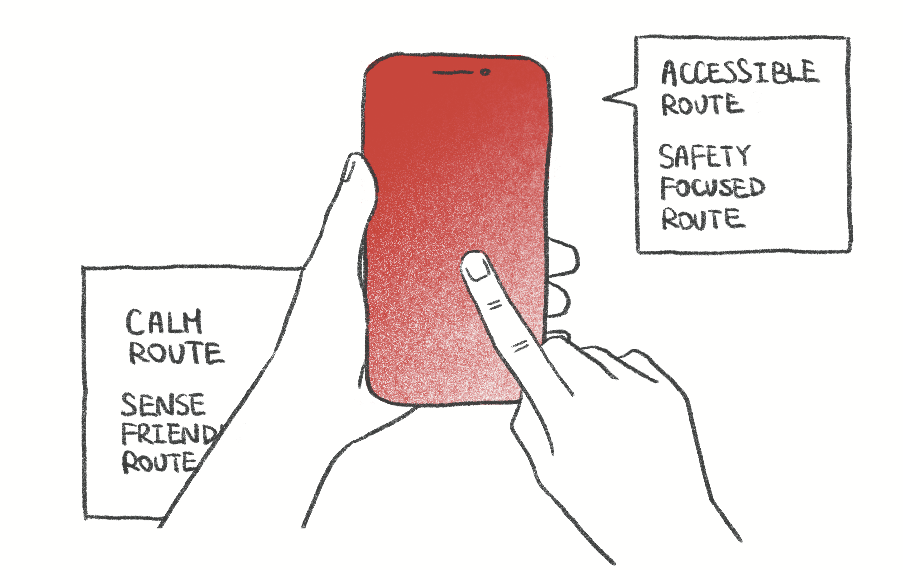

Every route is designed to spark questions about the layers of history beneath your feet, not to deliver packaged answers.
Stories from communities often absent from official heritage — migrants, women, working-class voices — are central, not marginal.
Audio-first design works for users with visual impairments. No specialist hardware — just a smartphone and headphones.
Exploring the past should be joyful. We pair rigorous history with compelling narrative craft and atmospheric soundscapes.
Routes are reviewed for safety. In-app guidance helps users navigate unfamiliar areas of the city with confidence.
We treat both the communities whose stories we tell and the historians who preserve them with deep ethical care.
Available on iOS and Android. Storyweave detects nearby routes and shows you a live map of trigger points around you.
GPS detects when you arrive at a location point. Audio begins automatically — no tapping required. Ambient sounds blend into the historical soundscape.
At key moments, you choose which story thread to follow. The narrative branches based on your curiosity, not a prescribed path.
The audio is designed to feel like a conversation with someone who was there — not a museum commentary.
Contribute your own memory about a location. Your layer of history becomes part of the city's living record — discoverable by future walkers.

A synthesised persona representing our core target audience: the narrative explorer who craves depth, authenticity, and emotional connection in travel.

Recommendation algorithms push the same "check-in spots." Can't tell which content is genuine vs paid ad. Dry institutional narration kills emotional connection. Can't find niche, authentic local content.
A story, a piece of history, or a moment of emotional resonance to truly set her on a journey. Honest first-person narratives. Freedom to explore at her own pace, with guidance available when she wants it.
We recruited a diverse group ranging from young international students to older domestic travellers, capturing a wide spectrum of travel motivations and digital habits.
Across all 10 interviews, six consistent patterns emerged that directly shaped Storyweave's design priorities.
Almost every participant mentioned that they need a compelling narrative (historical, mythological, or personal) before they feel motivated to visit a place. Facts alone don't move people.
Participants trust genuine personal accounts far more than influencer content or algorithm-pushed recommendations. They can tell when something is "authentic" vs. paid promotion.
Personal safety concerns were the single most cited reason for not visiting a place, mentioned by almost every participant, from young students to older travellers.
9 out of 10 participants prefer self-exploration over guided tours. But they still want narrative support: audio guides, podcasts, or story context, available on demand.
Participants use physical artefacts (tickets, postcards, earrings, pressed flowers) and sensory anchors like a song tied to a place to recall and re-experience travel memories.
Switching between multiple apps, wading through paid content, and not finding local or authentic perspectives were the most common friction points across all users.
Mapped across Discover → Choose → Explore → Rate → Share → Create → Reflect, tracing the emotional highs and lows that define how our users move through cultural travel.

At the "Explore & Immerse" stage, the absence of timely local context causes a dip in emotional engagement. Users feel disconnected from the place's living culture.
Lacking a timely travel journal or coordinate-recording tool was flagged as the biggest friction across the journey: users lose place data and can't revisit or share accurately.
The "Create" and "Reflect & Grow" stages are currently almost entirely unserved. There's a huge gap for tools that help users process, organise and re-share their experience.
A 5-scene narrative sketch showing the full user journey, from the spark of a travel idea to immersive, audio-led exploration in the city.
Zoey has reading week. She considers visiting a museum but feels the pull of discovering somewhere more meaningful.

She opens Storyweave and finds a narrative-led route, "A Day in the Life of a 19th Century Clerk," drawn across the London map.

She can also browse curated stories and discover places by the people who lived there, not just by map pin density.

Walking through Brick Lane, Zoey follows the audio story, an immersive layered narrative that brings each site to life without stopping her movement.

She can select a route mode (Calm Route, Sense-Friendly, Accessible, or Safety-Focused), tailoring the experience to her needs that day.
"Narrative-first" navigation changes how people move through the city; they follow stories, not star ratings.
Four actionable conclusions that directly shaped Storyweave's product direction.
No participant described deciding to visit a place based on facts or ratings alone. A story (historical, personal, or mythological) was always the emotional entry point. Storyweave must lead with story, not map pins.
Star ratings and view counts are largely ignored. Participants responded to first-person audio narration and friend recommendations because they carry a distinct human voice. Storyweave's audio content must sound like a person, not a guide book.
The sweet spot isn't self-guided OR guided: it's both, switchable. Users want to roam freely but have rich narrative context available whenever they pause to look around. Our interface should never interrupt, only enhance.
Every participant struggled to capture, organise, or re-share their experience after returning. There is a clear product gap for a "living memory" layer that bridges travel notes, route logs, and reflective storytelling.
| Feature | VoiceMap | SmartGuide | Storyweave |
|---|---|---|---|
| GPS-triggered audio | ✓ Yes | ✓ Yes | ✓ Yes |
| Branching / non-linear narrative | ✗ No | ✗ No | ✓ Core feature |
| Community co-created stories | ✗ No | ✗ No | ✓ Co-creation model |
| Oral history archive integration | ✗ No | ✗ No | ✓ National Life Stories |
| Marginalised / diverse voices | ~ Varies | ~ Institutional | ✓ Central mission |
| AR / VR dependency | ✗ None | ~ Optional | ✓ Audio-only by design |
| Free-to-user model | ~ Freemium | ✗ B2B only | ✓ Grant & partnership |
Try the prototype or play the pilot episode. No download required.